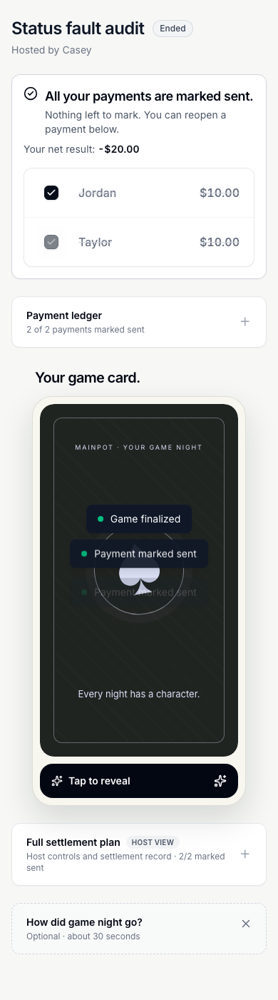
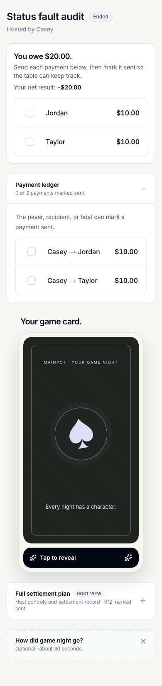
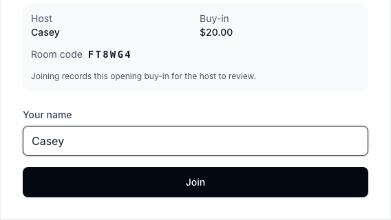
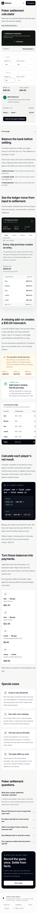

Mainpot — full application and multi-device audit
Follow-up: Implemented fixes and verification. The observations below describe the original audit; they do not imply the fixes have been deployed.
Audit date: September 26, 2026. Local application revision: d3283e716a6fc421f5917182c52e96ab0595018f. Production public target: https://mainpot.app. This is a fresh audit of the current checkout, with earlier reports used only to select regression scenarios. No application fixes, release, or production-data writes were performed.
Assessment
The core workflow is substantial and generally usable: host setup, joining, host-confirmed entries, managed players, early cash-out, host transfer, reconciliation, locked settlement, and account recovery have real browser coverage. The public layouts are clean across desktop, phone, tablet, and 320px widths. The most important remaining problems concern trust in payment status, durability, and recovery, rather than cosmetic redesign.
Two freshly reproduced local failures deserve first attention: unavailable payment records are presented as unpaid money, and failed device-only ledger writes are presented as successful saves. The public calculator also still produces payment instructions with a missing final-stack value, although the current local version correctly blocks that scenario. Local and production behavior therefore differ materially.
This report separates observed defects, intentional limitations that create usability gaps, source-based concerns, and tests that failed without an established product root cause. A passing test means its particular assertion passed; it does not establish every variation of the journey or physical-device behavior.








Environments and coverage
| Surface | Profiles | Method / boundary |
|---|---|---|
| Disposable-backend multi-user application | Desktop Chromium, Pixel 5 Chromium, iPhone 13 WebKit, desktop WebKit, iPad Mini WebKit | Separate host/player/account browser contexts; real local Supabase auth, RPCs, migrations, realtime and persistence. This is hosted-style local testing, not production acceptance. |
| Device-only application | Same five profiles | Local storage, host-managed roster, settlement, validation, offline/recovery and install-prompt simulations. |
| Live public application | Desktop Chromium 1440×900, Pixel 5, iPhone 13, iPad Mini, desktop WebKit 1440×900, narrow Chromium 320×568 | 12 routes per profile, 72 checks; accessibility scan, errors, width, redirect destination, screenshot captures. No live game/account created. |
| Additional edge probes | Chromium 390×844, 320×300, 568×320; Pixel-sized multi-session contexts | Payment-status HTTP failure, storage quota failure, short-height join geometry, dialog escape, and managed-seat continuity. These deliberately target failure states beyond the happy-path suites. |
Live routes checked: /, /create, /join, /signin, /dashboard, /friends, /poker-settlement-calculator, /feedback, /privacy, /terms, /self-host, and a nonexistent route. Signed-out Dashboard and Friends correctly returned to sign-in with their intended destination. The nonexistent route returned 404; the other checks returned 200 after redirects. All 72 checks had no uncaught page errors or document-level horizontal overflow.
Browsers ran headlessly. Docker context was verified as OrbStack before using the disposable mainpot-e2e Supabase stack. The ordinary developer database was not reset. Test accounts and financial records were synthetic and confined to the disposable stack.
Fresh verification results
| Check | Result | Interpretation |
|---|---|---|
| Unit tests | 161 passed, 26 files | Supporting calculation, identity, auth, request and payment logic. |
| Five-profile device-only smoke / entry / PWA suite | 87 passed, 3 skipped, 90 total | Real Chromium service-worker recovery exercised. Three WebKit cases skip worker control that Playwright cannot expose. |
| Five-profile multi-user suite | 116 passed, 4 failed, 120 total, no automatic retries | The original run is not green. Failures are documented below and remain part of the evidence regardless of follow-up results. |
| Serial diagnostic rerun | 8 passed, no code changes | The four failing scenarios passed on Android-sized Chromium and iPhone-sized WebKit with one worker. This improves reproducibility confidence but does not explain or erase the initial failures. |
| Isolated database assurance | All seven suites passed, exit 0 | Authorization, audit security, allocation guards, account-transfer capabilities, early-exit phase race, idempotent creation and locked-plan payment security. These are disposable migration-stack checks. |
| Public production route/layout/accessibility sweep | 72 completed, 0 harness errors, 0 overflow, 0 uncaught page errors | One distinct contrast defect appeared on sign-in and its redirected entry points across all six profiles. |
| Payment-status fault injection | Confirmed | Both transfers were marked sent; eight injected status GET failures caused the UI to ask for both payments again. Removing the fault restored the sent states without another write. |
| Device-only quota injection | Confirmed | A $7 rebuy appeared saved and the pot became $27; reload restored the old $20 ledger. |
| Production calculator missing-stack probe | Confirmed | Missing player 2 stack yielded “Bank balanced” and a $20 payment. |
Both browser suites built the current application successfully before running. Their initial runs overlapped, as did some public/edge probes, increasing local load. Several failing expectations have a five-second assertion deadline. This is a relevant diagnostic condition, not proof that load explains every failure. Serial follow-up removes that overlap. No CI, deployment, or production migration is established by these results.
Issue inventory
Severity: P1 threatens money instructions, recorded financial data, or reliable release; P2 disrupts an important task or accessibility; P3 is lower-impact polish. No P0 exploit or outage was established by this audit; that is not a comprehensive security certification.
| ID | Priority | Finding | Evidence | Affected surface |
|---|---|---|---|---|
| F01 | P1 | Failed payment-status reads become “You owe” and zero payments sent | Browser fault injection + source | Locked settlements, payer/host |
| F02 | P1 | Failed device-only ledger persistence still shows save success | Browser quota injection + source | Local-only host ledger |
| F03 | P1 | Live calculator turns an unentered final stack into payment-ready results | Live browser reproduction | Production calculator |
| F04 | P1 release gap | Local fixes cannot be assumed to be live | Direct public behavior comparison | Release / returning users |
| F05 | P2 | Direct-link join panel clips table/amount information on short screens | Browser geometry + screenshot | Landscape / reduced-height joining |
| F06 | P2 | Direct-link join gate has no in-app escape or route back | Browser Escape/navigation inspection + source | Visitor joining / wrong identity |
| F07 | P2 | Local-only host still gets a QR/link that promises cross-device joining | Browser dialog capture + regression evidence | Device-only host / invited player |
| F08 | P2 workflow gap | A host-managed seat cannot become the joining person's seat | Disposable-backend browser reproduction | Host-managed → phone-owning player |
| F09 | P2 recovery gap | A person who left cannot restore participation from the same room | Current source inspection | Returning player |
| F10 | P2 accessibility | Sign-in separator text fails contrast | Live axe scan, six profiles | Sign-in / redirected account entry |
| S01 | P2, source-based | Some committed ledger operations still depend on a separate audit-event write | Current source inspection | Buy-in / removal / repayment error recovery |
F01 — unavailable payment status looks like a fresh debt
Observed: a disposable hosted game was locked with Casey paying Jordan and Taylor $10 each. Both payments were marked sent. The personal summary correctly read “All your payments are marked sent.” After intercepting GET /rest/v1/settlement_payments with a deterministic HTTP 400 and reloading, it read “You owe $20.00” and instructed “Send each payment below.” The ledger read “0 of 2 payments marked sent.” Removing the interception and reloading restored the original sent status.
Impact: a returning payer can be directed to repeat a payment already recorded. The server did not lose the record; the UI converted unknown information into a confident financial instruction. That is more serious than an absent loading indicator.
Cause: components/Settlement/SettlementScreen.tsx:317-332 and TransferList.tsx:164-180 initialize empty status sets and swallow read errors. The personal summary treats missing keys as outstanding. Dashboard history's unavailable handling does not protect this room view.
Recommended change: represent status as loading / known / unavailable; retain previously known state during refresh, visibly mark it stale when appropriate, and suppress unconditional send-again instructions until the payment-state read succeeds. Provide a retry. Apply the same authoritative read state to personal summary, shared ledger and host detail.
Acceptance: reproduce this exact two-payment fixture; after read failure, neither sent record becomes a confidently unpaid instruction. Recovery restores both without another payment-status write. Include a failure after an initially successful read and separate payer/recipient views.
Evidence: before failure, after failure, structured results.
F02 — quota failure silently discards a successful-looking rebuy
Observed: in device-only mode, the host started at $20. The audit made only writes to the actual ledger key ante_store throw QuotaExceededError; identity and recovery storage remained usable. Adding a $7 rebuy closed the editor, showed “Rebuy added,” and updated the pot to $27 / two entries. Reload showed $20 / one entry; the rebuy had never persisted.
Impact: the user is encouraged to trust a financial record that disappears on reload. This reproduction simulates browser storage exhaustion or a denied write; it does not claim the ordinary device has actually exhausted its quota.
Cause: lib/data.ts:208-216 logs the storage error and returns normally. Its caller emits an in-memory snapshot and success state regardless of durability.
Recommended change: make persistence failure fail the mutation visibly. Keep the user's draft and explain that nothing was durably saved. Do not present the optimistic snapshot as confirmed ledger state. If degraded in-memory use is offered, explicitly label it and provide an export/recovery path.
Acceptance: injected storage failure produces a retained draft and actionable error; no success toast or confirmed pot change. Removing the fault allows exactly one saved entry that survives reload. Also test unavailable/corrupt storage reads without silently replacing the user's existing ledger.
Evidence: before reload, after reload, edge results.


F03 — production calculator still accepts missing outcomes
Observed live: clear the example; enter player 1 money in $20, final stack $40; enter player 2 money in $20 and leave their final stack blank. The live app displays “Bank balanced,” “1 payment,” and $20 from player 2 to player 1. The local five-profile suite correctly requires an explicit stack and accepts a deliberately entered zero.
Impact: arithmetic balance can disguise incomplete information. A host may send the provisional instruction without confirming whether the second person actually finished with zero.
Recommended change: release the already-existing explicit-input protection with its matching validation. A balanced sum alone must not make an incomplete form payment-ready.
Acceptance: repeat the exact fixture at the live route on phone and desktop; blank blocks payment output, explicit zero allows it, and invalid text remains visibly invalid.
Evidence: live missing-stack screenshot, edge results, fresh local entry/calculator suite in smoke log.
F04 — current local and live behavior diverge
Observed: F03 is fixed locally and still present live. Live /create captures also lack the current local explanation of deferred net settlement. The current checkout was 65 commits ahead of the locally stored origin/main ref at intake. That local ref comparison is not a freshly fetched remote or a deployment identifier.
Impact: earlier reports and local passing tests can overstate what an actual hosted user receives. In particular, public availability, a healthy endpoint, and two previously documented inbox hotfixes do not prove the full schema/application release matches.
Recommended change: establish one release manifest linking application commit, deployed artifact and required migration versions, then run acceptance on the exact live routes. Preserve this audit's failures as release work; do not publish a generic “all fixed” claim.
Acceptance: identify the actual deployed revision and migration inventory; verify create/join, same-account fresh-device resume, approval, early exit, locked payments and calculator on that version using explicitly designated test data. This audit did not mutate production or perform that release.
Evidence: live phone setup, live calculator fixture.

F05 — direct invitation loses its consent context in landscape
Observed: the direct room-link join panel had a top coordinate of −96px at 568×320 and −136px at 320×300. Its bottom equalled viewport height and the document itself had no extra scroll range. The captured panel starts partway through the host/buy-in details; the heading and other consent information are above the viewport. The name and Join button remain available.
Impact: the joining person can submit without seeing all table/amount context. This is directly reproduced at short desktop-emulated viewport sizes; it is not proof of what a real iOS virtual keyboard does.
Cause: components/GameRoom/JoinPrompt.tsx:116-126 uses a fixed, bottom-aligned panel without a viewport-height limit and scroll container, unlike the invitation dialog.
Recommended change: constrain the panel to available viewport height and make its content scrollable; preserve the visible title, amount and primary action where practical. Test landscape, large text, long names and keyboard-reduced usable height.
Acceptance: all table details can be reached at 568×320 and 320×300 with keyboard/touch scrolling; no content is permanently above the viewport.
Evidence: landscape capture, short capture, geometry in edge results.

F06 — joining gate offers no application exit
Observed: Escape left the mandatory join dialog open; the dialog contained no link, cancel, close, or back action. The room's only rendered branch for an identity with no seat is this dialog. The name is prefilled from device storage.
Impact: a visitor following the wrong room or identity has to know to use browser history/address navigation. There is no visible way to return to code entry or sign in to recover an existing account-owned seat. Treating this as mandatory consent does not require trapping the person inside it.
Recommended change: provide “Back to join” and a contextual account-recovery route when relevant. It is acceptable to keep the ledger inaccessible until membership is authorized; exiting must not grant access.
Acceptance: a wrong-link visitor exits by visible action and keyboard, retains appropriate input, and can sign in/resume without creating another financial seat.
Evidence: dialog observations in edge results; source JoinPrompt.tsx:163-178, room branch app/game/[code]/page.tsx:624-632.
F07 — local invitation promises something that cannot work
Observed: a local-only host sees “Saved on this device · live sync is off” in the room, but Invite shows “Scan to join,” “Scan with your camera · no account required,” Copy code and Share invite, without a local-only warning inside that dialog. The fresh entry suite confirms that a separate browser cannot find the host's device-only table.
Impact: the user is encouraged to share an unusable invitation. The difference between no sync and no cross-device joining is not obvious to a first-time host.
Recommended change: in local-only mode replace QR/share promises with host-managed-player guidance and a clear explanation. If a route to connected hosting exists, offer it explicitly without implying automatic ledger migration.
Acceptance: local-only setup/invite clearly explain which browser holds the table; independent guest sees actionable guidance. Connected tables retain functional QR/link joining.
Evidence: local invitation, dialog text, local-only two-context regression in smoke log.

F08 — a player arriving after host entry creates another seat
Observed: host Casey added a managed Jordan with a $20 opening entry. A separate guest then joined the room as Jordan. The table had three seats: Casey, host-managed Jordan ($20 confirmed), and Jordan / You (another $20 pending). No offered action linked the new device to the existing managed seat.
Impact: this ordinary transition can look like duplicate bookkeeping. If the host approves without noticing, one person's chips may be counted twice. This is a missing continuity workflow, not evidence that two people with the same name must be merged.
Recommended change: offer a host-authorized claim/link workflow or explicitly warn how to handle an already entered player. Never grant ownership merely because names match. If the feature is intentionally unsupported, make that limitation visible when adding a managed player and when joining.
Acceptance: a previously managed player obtains their existing authorized seat without another opening buy-in; wrong users, identical names and replayed claim links cannot claim it. Host and actual joining device see the same financial history.
Evidence: duplicate-name seat capture, initial probe results. The initial script's later leave step hit a locator error; only its completed managed-seat observation is evidence here.

F09 — leave is final for participation, with no return path
Source-based: the room resolves a matching seat, then left_at disables active controls. The Join prompt only renders when there is no matching player. The footer says “You left this game” without a rejoin/request action. The join RPC returns an existing seat unchanged rather than undoing its departure.
Impact: someone who stepped away or left by mistake cannot resume play from the same identity. Adding another managed seat is not equivalent to restoring their seat and could fragment the ledger.
The leave dialog does disclose that the person cannot add more and must settle later. This is a deliberate one-way policy with a recovery gap, not a reproduced unexpected data-loss bug. The attempted extra leave probe did not complete; fresh normal early-exit/handoff tests are separate evidence.
Recommended change: define a host-approved return policy before changing it. A plain leave with no locked early cash-out might be recoverable; a locked early exit needs a financially safe policy. Explain the distinction to the returning player.
Acceptance: supported return restores one seat and preserves entries; locked exits cannot silently reopen finalized obligations. Unsupported return explains the actual next step.
Source: app/game/[code]/page.tsx:293-297, 624-632, 744-749; supabase/migrations/20260926054008_lifecycle_buy_in_reliability.sql:53-63.
F10 — sign-in contrast fails the accessibility baseline
Observed live: axe reported the sign-in separator's foreground #99a1af on white at 2.6:1, below the 4.5:1 threshold for its 12px normal text. This appeared across all six profiles. Dashboard/Friends scans share the finding because those signed-out requests redirect to the same sign-in page; these are not three distinct defects.
Impact: low-vision users may struggle to read the authentication-alternative separator. This is a small visual change with a clearly measurable acceptance criterion.
Recommended change: darken the secondary separator text. Source counterpart: app/signin/page.tsx:283 (text-gray-400).
Acceptance: computed contrast is at least 4.5:1 at the live authentication states; rerun axe and manually inspect. A zero-violation scan elsewhere does not certify keyboard, screen-reader or motion accessibility.
Evidence: public structured scan, phone sign-in.

S01 — commit and audit event are still separate for some operations
Source-based, not fault-injected: addBuyInSupabase commits through create_buy_in_idempotent, then performs name reads and a separate addSupabaseEvent call (lib/data.ts:1664-1725). Removal performs the delete before its event (1730-1755); marking an advance repaid updates the row before its event (1801-1838). A later event failure can therefore reject the overall client action after the financial row already changed.
Impact: false failure wording and incomplete activity history can leave a host unsure whether to retry. The idempotent buy-in operation protects the financial entry from simple duplicate replay; that does not make the event atomic or prove all UI recovery states are correct. Host correction already uses an atomic path, so its passing timeout regression does not close these other paths.
Recommended change: either include the authoritative event in the same database operation or return a precise committed-success/secondary-history-failure state with reconciliation. Do not replace an unknown outcome with a blanket unsuccessful-save message.
Acceptance: inject event failure after each listed committed mutation, then inspect the shared ledger and reload. User copy agrees with committed state; retries do not duplicate financial entries or quietly erase required audit history. Verify effective database triggers before expanding this into a security claim.
Multi-device failures requiring follow-up
The first full backend run failed four checks:
| Device | Scenario | Actual evidence |
|---|---|---|
| Pixel-sized Chromium | Host-managed table | After recording Jordan's $5.50 buy-in, the manage dialog remained present beyond the five-second assertion. The snapshot already showed a $45.50 pot. |
| Pixel-sized Chromium | Account-owned cross-browser recovery | Initial Create navigation had not exposed End game within five seconds; the captured create form retained the correctly entered values. This failed before the fresh-browser resume assertion. |
| Pixel-sized Chromium | Expired guest recovery | After Retry recovery, the test could not find its expected expiry alert. The snapshot showed a signed-in dashboard. A claim-transfer request returned HTTP 400 as expected for the injected condition, but the precise UI transition cause remains unresolved. |
| iPhone-sized WebKit | Shared cash-out phase | Guest still showed the active room when the cash-out heading was expected after host started settlement. |
These observations do not prove permanent account loss, duplicated money, or a regression identical to the earlier iPad input-loss report. The current account case retained its input values. The first run had concurrent smoke/public testing; three timing failures have explicit five-second assertions. The expiry-message failure deserves separate attention because reaching Dashboard is a different state from the expected recovery explanation.
All eight serial follow-up checks passed unchanged (43.3 seconds of browser execution), covering all four scenarios on both mobile profiles. Keep an open diagnostic item for synchronization/navigation/error-state behavior under concurrent load; the exact causes are not established. Original snapshots are retained under initial failures and the full multi-user log. The serial log documents the follow-up. Rerun success must not be relabelled as a clean first run or a confirmed code fix.
Role-by-role assessment
| Perspective | Verified strengths | Remaining concerns |
|---|---|---|
| First-time host | Form validation, optional opening entry, managed players, corrections, approval and end-phase gates have current browser coverage | Durability in local mode; invitation capability mismatch; release drift; plain financial language remains important |
| Joining guest | Preview and explicit pending opening buy-in; one entry on reload/rejoin; shared ledger and host-only controls | Direct-link short-height consent context; exit/recovery route; managed-seat continuity |
| Returning account host/player | Cross-browser ownership and history, unfinished resume, guest-to-account transfer, templates and deletion cancellation are exercised | Original mobile account navigation/recovery failures; real provider handoff remains unverified; left-seat return is unsupported |
| Host managing absent/phone-free people | Record entries and early cash-out without impersonating their device; host-added changes sync to guests | Existing managed seat cannot be claimed by arriving player; avoid two seats for one person |
| Leaving player / replacement host | Locked early exits carried into final settlement; host authority transfer tested | Intentional one-way departure needs clearer recovery policy |
| Payer / recipient / banker | Locked plan, both banker directions, mark/reopen and shared payment progress tested | F01 is a financial trust blocker; status is self-reported, not verified receipt |
| Visitor / outsider | Joining required before active ledger view; signed-out account redirects and 404 behavior correct | This is limited boundary coverage, not complete authorization/penetration testing |
| Slow / offline user | Bounded correction with retained draft; delayed zero cash-out retry; lost create-response replay; Chromium offline route recovery | Short-height panel; unavailable payment state; real OS background/eviction and long outages untested |
| Low-vision / keyboard user | Public axe sweep, narrow layouts and existing skip-link/form/focus regressions | Sign-in contrast; direct-link gate exit; full screen-reader and 200% text behavior not certified |
Previously reported findings that are addressed locally
Fresh suites support the current implementation of account-wide unfinished-table discovery, multiple guest table recovery, automatic pending opening entries, host-confirmed corrections with retained drafts, shared persisted bank selection, explicit calculator inputs, early-exit obligations in personal payment summaries, templates with maintenance controls, failed friend loading/retry, and deletion cancellation. Some associated multi-user assertions failed in the first run as described above, so this is not an unconditional all-device reliability claim.
The earlier audit's manual-join consent and calculator missing-input findings should not be refiled as current local implementation defects. F03 is specifically a live release gap. Likewise, this audit did not reproduce the historical forever-loading buy-in edit: the deliberately stalled correction recovered through its tested deadline on all five profiles.
Supported-money and operational limits
Mainpot currently models deferred net settlement, including a selected banker routing those net obligations. It does not model gross payouts from an already-funded cashier pot. In the two-player $20/$20 example, $20 from loser to winner is the deferred-net instruction; a cashier who already collected $40 must instead pay the winner $40. This is a product contract and adoption limitation, not evidence of incorrect netting arithmetic. Current local setup explains it; live setup captures lack that explanation.
“Host-confirmed entry” is bookkeeping acknowledgment. “Marked sent” is a manual participant/host report. Neither establishes that real funds arrived. Existing reminders are useful, but acceptance with actual unfamiliar hosts must establish they understand this distinction.
Account export is described as account-summary data, not a complete financial-ledger backup. Deletion remains a request-processing workflow. This pass exercises request cancellation; it does not establish fulfillment, retention enforcement, off-host backup or restore.
Checks still needed on actual devices / hosted accounts
- Physical iPhone Safari and installed standalone PWA: install, force quit, process eviction, relaunch, background while another person writes, and recovery without a different identity.
- Physical Android Chrome/PWA: real install UI, notification permission and delivery, suspended tab recovery, keyboard amount entry, rotation and text scaling.
- Real password confirmation, magic-link and Google OAuth: delayed email, same-browser and different-browser opening, account/guest continuity and expired-proof explanation. Disposable auth cannot prove mail delivery or provider behavior.
- Native invitation sharing, clipboard permissions, camera QR and external payment-app links, including cancelled handoffs and return to the same obligation. No actual payment was sent.
- Hosted complete game with explicitly authorized test accounts, matching schema/application versions and two genuinely independent devices. This public read-only audit cannot establish hosted signed-in dashboard or realtime quality.
- Human usability: unfamiliar host completes setup, approvals, mismatch handling, cash-outs and payment explanation without coaching. Product comprehension and outside repeat use are unmeasured.
- Full assistive-technology review: screen reader, actual browser zoom/text scaling, reduced motion and all dialog journeys. Automated axe and width checks cover only part of accessibility.
Recommended work order
- Fix F01 and F02 with authoritative success/unknown/error states. These are the newly confirmed financial-trust issues.
- Resolve the serial regression findings and release verification; publish the already-fixed calculator/consent/recovery behavior with matching migrations.
- Correct direct-link panel geometry and exit route, and make local invitations truthful.
- Define host-authorized managed-seat claiming and safe return-from-leave policies before adding more roster/social features.
- Close the contrast defect and the separate-event recovery concern; then run physical-device/provider and novice-host acceptance.
Evidence and reproducibility
Commands and scripts:
npm test
npm run test:db:assurance:isolated
PLAYWRIGHT_ALL_DEVICES=1 npm run test:e2e:realtime -- --workers=3 --trace=retain-on-failure
NEXT_PUBLIC_SUPABASE_URL='' NEXT_PUBLIC_SUPABASE_ANON_KEY='' PLAYWRIGHT_ALL_DEVICES=1 PLAYWRIGHT_PORT=3120 npm run test:e2e -- --workers=3 --trace=retain-on-failure
node docs/audits/2026-09-26/full-pass/public-sweep.mjs
edge-probes.mjs requires a local-only production build running on port 3120. payment-failure-probe.mjs requires the disposable hosted-style build/stack on 3110 and 55321. role-probes.mjs likewise requires that disposable server. Do not retarget financial/identity mutation probes to production without explicit designated test data. The public sweep makes no account/game writes.
The edge scripts were corrected after initial harness issues (wrong textbox locator and a stopped local server); their completed structured results are the evidence used here. The role script completed the managed-seat observation but its leave step failed before completion. Those harness errors are not counted as product defects.
The seven-suite database evidence is retained in database.log. The machine-readable verification record includes counts, exit status and release boundaries.
Visual inspection included fresh production phone setup, the failed-status settlement, the clipped join panel, and financial/storage before/after captures. Full-page screenshots reveal content and order; they do not establish what is visible above the fold on a physical phone.
This work leaves application source unchanged. New artifacts are isolated in this audit directory; existing regression screenshots generated by the suites are preserved here rather than changing the historical audit record. No commit, push, CI run or release was requested or performed.
Integration follow-up: direct seat writes
The remediation review identified an additional permission gap beyond the original browser findings. The existing players join as self INSERT policy checked ownership only, allowing raw seat creation outside the guarded join lifecycle. The players self or host delete policy also allowed an active guest to delete their own seat; the player foreign keys cascade to buy-ins and cash-outs. These bypass paths are addressed by S02 in the remediation report, with isolated security verification recorded there. The regular developer database and production were not migrated.